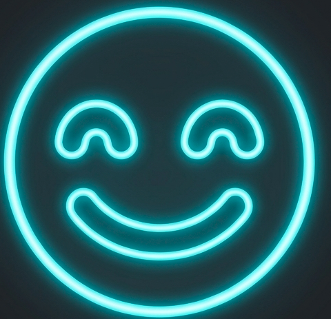
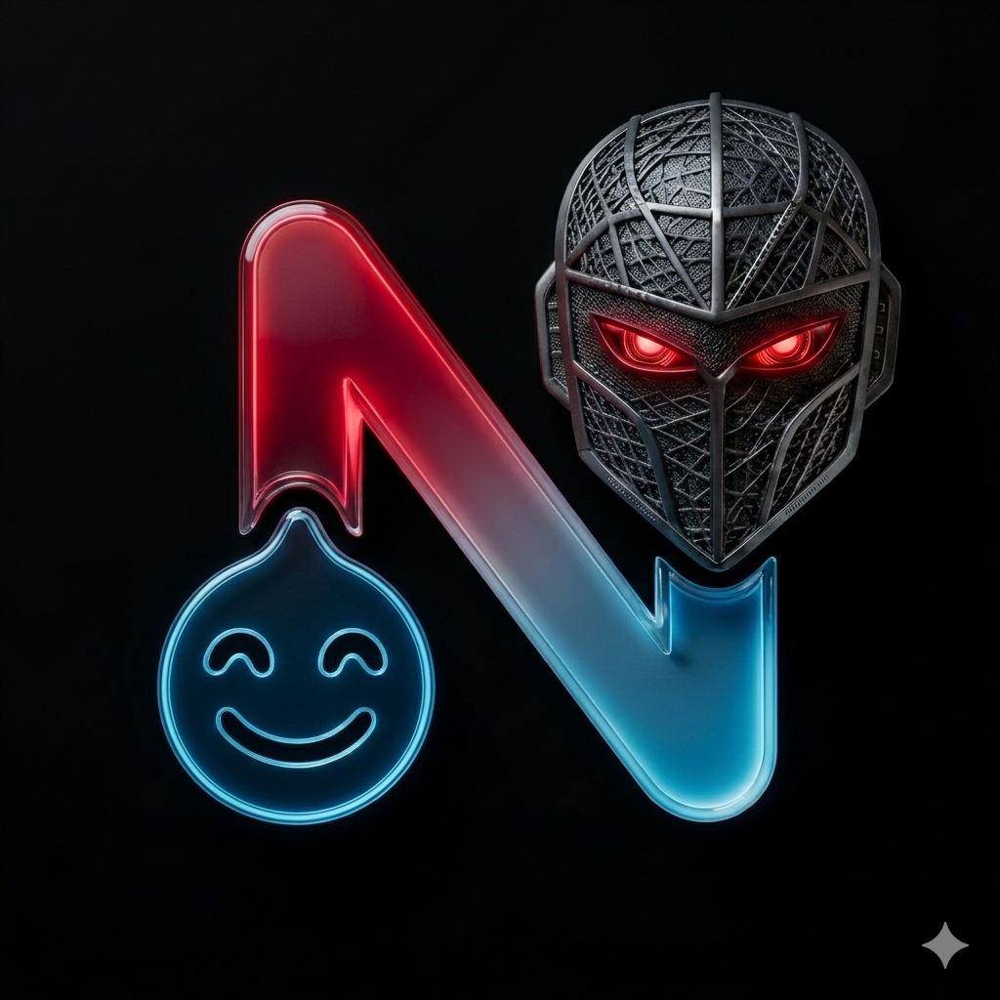

NAVA

SYSTEM_LISTENING...
NAVA
أهلاً بك، أنا NAVA. تم تطويري بواسطة NAWAF للاختراق، لذلك احرص على أن لا تؤذي أحداً.

INITIALIZING_CORE...

SYSTEM_LISTENING...
أهلاً بك، أنا NAVA. تم تطويري بواسطة NAWAF للاختراق، لذلك احرص على أن لا تؤذي أحداً.
> CAUTION: Unrestricted access to offensive tools.
> TRACING: Disabled.
> LIABILITY: User-Only.
> هل تود المتابعة؟